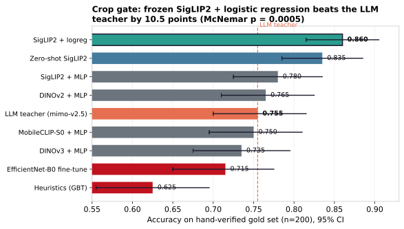
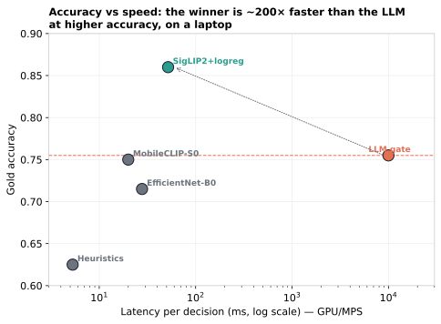
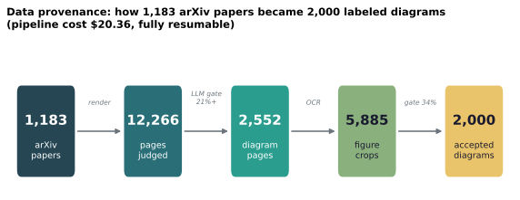
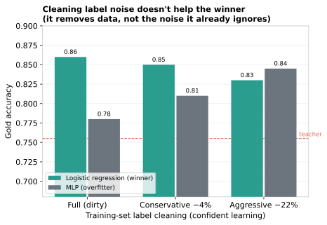

A frozen SigLIP2 encoder with a small logistic-regression head beats the vision-LLM that labeled its own training data. It's more accurate, runs about 200× faster, and costs nothing on a laptop.
Nine approaches, scored on 200 hand-checked crops. The simplest learned model wins.

Flip between what the LLM's labels say (silver) and what hand-checking says (gold). The order changes. The MLP looks best on silver, then falls apart on gold because it learned the teacher's mistakes.
Single-image latency, measured on an Apple-Silicon MacBook. The winner sits in the top-left corner: accurate and fast. The LLM gate is two orders of magnitude slower, and less accurate.

A resumable pipeline turns arXiv PDFs into labeled diagrams for $20.36. It journals every decision, so the training set for the classifier falls out as a byproduct. The LLM that built it becomes the teacher we later beat.

A sample of the 2,000 released diagrams. Filter by field; click any diagram for its type, label, and source paper.
Cleaning out the noisiest training labels doesn't move the winner. It just removes data the model was already ignoring. It does rescue the model that overfit, but not past the simple baseline. To get past 86% you'd need more signal, not less noise.

It's all open source, and it runs on a laptop. No GPU cluster, no Colab.
git clone https://github.com/adoistic/stem-diagrams cd stem-diagrams/arxiv_diagram_pipeline/ml python3 -m venv .venv && source .venv/bin/activate pip install -r requirements.txt python assemble_dataset.py # frozen paper-level splits python extract_embeddings.py --backbone siglip2 python probe_experiments.py # train the probes (seconds) python evaluate.py --gold probe_siglip2_logreg # headline vs gold
The paper has the full method: how the gold set was labeled, every model on the ladder, and the call on what to put in production.